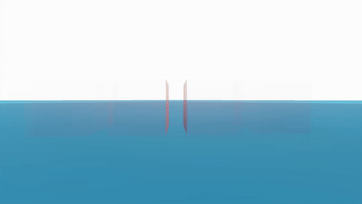

This project I've been working on and off in my free time is a way for me to try out any interesting ideas I might have. Taking inspiration from the Titan Fall 2 level design GDC, I im testing out as many concepts as possible, to be use within any future projects. This will allow for varied moment to moment game play, where each idea could be used as a set pice for pacing or a general moment to moment thing.
Active rag dolls allow for some interesting dynamic and some times hilarious game play scenarios.
Godot's joint constrains don't support many features compared to other game engine currently, so I had to implement some of these features,
such as a spring force to get the bones to move in there desired position. I modeled and rigged this character for the project in blender
- I call him Gerald.
I think a hybrid approach of traditional animation, procedural and the active rag doll could be combined to make a
convincing and reactive character. Perhapses this is how i will further improve this current system, however I am currently not a
complete expert on animation, that is one area id like to become more skilled at to help bring this idea to reality.
After watching the film 'Grand Budapest Hotel' I wondered what it would be like for a game to use the same aspect ration trick the film uses. The film is set between several time periods, and it changes the aspect ration depending on what one you currently watching, which I think would work great for games. In this example a level designer or artist could place around there aspect ration volumes and set what ratio they want. with this solution if a user was using a 2.35:1 sized monitor, if the games aspect ration went to cinema scope then the entire screen would be used, instead of using black bars.
when i noticed the the FOV slider in Godot caped at 179° I got curious to see what it would like like to have a 360°. To achieve this I used three 120° each looking in deferent directions. from there i render each camera to a third of the screen. I also had to write some code to correctly rotate and move the individual cameras as at first a standard FPS camera set up didn't work correctly. Im quite pleased with the result and think it could make for a cool level, power up or even standalone game, however Im not a fan of how there are harsh seams where the cameras join. To fix this I believe I'll need to alter the engines render.
Please feel free to contact me via this email provided below.